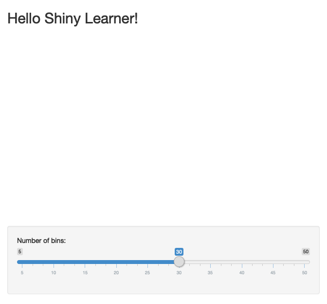

8 Application layout guide
Shiny includes a number of facilities for laying out the components of an application. This guide describes the following application layout features:
The simple default layout with a sidebar for inputs and a large main area for output.
Custom application layouts using the Shiny grid layout system.
Segmenting layouts using the tabsetPanel() and navlistPanel() functions.
Creating applications with multiple top-level components using the navbarPage() function.
These features were implemented using the layout features available in Bootstrap 2, an extremely popular HTML/CSS framework (though no prior experience with Bootstrap is assumed).
This means that
Bootstrap2is a potentially good look-into language.
Reference: (https://shiny.rstudio.com/articles/layout-guide.html)
8.1 Standard one

This is the
library(shiny)
# Second part, define UI for the Shiny app
ui <- fluidPage(
# App title ----
titlePanel("Hello Shiny Learner!"),
# Sidebar layout with input and output definitions ----
sidebarLayout(position = "right",
# Sidebar panel for inputs ----
sidebarPanel(
# Input: Slider for the number of bins ----
sliderInput(inputId = "bins",
label = "Number of bins:",
min = 5,
max = 50,
value = 30)
),
# Main panel for displaying outputs ----
mainPanel(
# Output: Histogram ----
plotOutput(outputId = "distPlot")
)
)
)
# Third part, define server logic required to draw a histogram
server <- function(input, output) {
# Histogram of the Old Faithful Geyser Data ----
# with requested number of bins
# This expression that generates a histogram is wrapped in a call
# to renderPlot to indicate that:
#
# 1. It is "reactive" and therefore should be automatically
# re-executed when inputs (input$bins) change
# 2. Its output type is a plot
output$distPlot <- renderPlot({
x <- faithful$waiting
bins <- seq(min(x), max(x), length.out = input$bins + 1)
hist(x, breaks = bins, col = "#75AADB", border = "orange",
xlab = "Waiting time to next eruption (in mins)",
main = "Histogram of waiting times")
})
}
# Fourth part, tie up ui and server
shinyApp(ui = ui, server = server)##
## Listening on http://127.0.0.1:8763